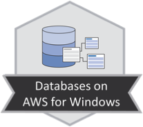
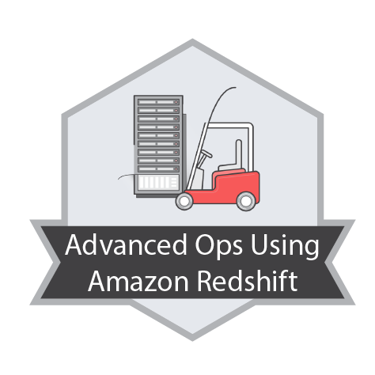

Jordi Isidro Llobet
Entusiasta del Business Intelligence.
Ja fa més de 15 anys que volto pel món del BI. Des de que a la carrera vaig descobrir les bases de dades vaig saber que hi volia treballar. A EADA, la primera empresa on vaig treballar, ja vaig començar a fer un projecte de migració de bases de dades i al 2005 em van oferir disenyar datawarehouse de l'empresa. A partir d'aquí he anat encadenant projectes, sempre al sector del BI, normalment amb tecnologies Microsoft, però també amb altres tecnologies propietàries com SAP Business Objects, Tableau, Redshift o open source com Pentaho o Jaspersoft.
També intento no desconnectar-me de la programació clàssica, ja sigui en Java o Python.
Tinc un bloc eljordifabi.tech ,centrat sobretot en SQL Server, on vaig escrivint les coses que vaig aprenent i que em semblen útils. El bloc està centrat sobretot en un projecte en BIML per generar codi automàticament per descarregar dades de diversos orígens de dades cap a una staging area mitjançant SSIS.
Actualment sóc tech i team lead de BI a Vueling.
Experiència laboral
 Vueling
Vueling
Team Leader de l'equip de Data Engineering de l'àrea comercial format per 17 persones.
Membre de l'equip d'arquitectura del departament de Data.
Product Ower de l'equip de e-Commerce Sales Performance.
Les principals eines utilitzades són:
- SQL Server 2016 on premise
- SQL Server Integration Services
- Business Objects 4.2
- Ecosistema Amazon (sobretot S3, Redshift)
 Birchman group
Birchman group
Referent tecnològic en l'àmbit de BI dins de Birchman.
Preparació de demos a client en l'ecosistema Microsoft (SQL Server, Power Pivot, Power BI)
Arquitecte BI desplaçat a les oficines del client. Les principals funcions desenvolupades són:
- Control de rendiment d'SQL Server.
- Definició d'estructures de dades.
- Anàlisi, disseny i implementació de datamarts.
- Implementació d'ETLs per la càrrega de dades (SSIS 2008 R2 i 2014).
- Implementació de reports (BO 3.1 i 4.1).
- Formació a usuaris de Business Objects (3.1 i 4.1).
- Migració de SQL Server 2008 R2 a 2014.
- Implementació de funcionalitats en AWS (S3, EMR, Redshift)
- Implementació de sistemes de control, automatització de desplegament i auditoría de codi
Birchman group
Referent tecnològic en l'àmbit de BI dins de Birchman.
Preparació de demos a client en l'ecosistema Microsoft (SQL Server, Power Pivot, Power BI)
Formació de nous consultors per a Birchman.
Consultor desplaçat a oficines de clients, alguns d'ells amb desplaçaments a l'estranger (Sudàfrica, Regne Unit). Les principals funcions desenvolupades han estat:
- Implementació d'ETLs per a la càrrega de dades (SSIS 2008 R2)
- Implementació de reports (SSRS 2008 R2 i BO XI R2)
- Migració d'un sistema en ACCPAC a BPC (SSIS 2018 + Connectors BPC)
- Descàrrega de dades de SAP/R3 a SQL Server (Theobald ERP Connect)
 Icnet Consulting
Icnet Consulting
Consultor desplaçat a oficines de clients. Les principals funcions desenvolupades han estat:
- Implementació d'ETLs per a la càrrega de dades (SSIS 2000 i 2008 R2)
- Creació de cubs (SSAS 2008 R2)
- Implementació de reports (SSRS 2008 R2 i BO XI R2)
- Migració de SQL Server 2005 a 2008 R2
Icnet Consulting
Consultor desplaçat a oficines de clients. Les principals funcions desenvolupades han estat:
- Implementació d'ETLs per a la càrrega de dades (SSIS 2000 i 2008 R2)
- Creació de cubs (SSAS 2008 R2)
- Implementació de reports (SSRS 2008 R2 i BO XI R2)
- Migració de SQL Server 2000 a 2008 R2
 Escola d'Alta Direcció i Administració
Escola d'Alta Direcció i Administració
Implementació del datawarehouse d'EADA utilitzant Oracle PL\SQL.
Recreació del sistema de reporting utilitzant JasperReports i OpenReports.
Escola d'Alta Direcció i Administració
Ajuda a la migració del sistema operacional des d'un HP3000 a Oracle 9.i
Ajuda en l'implementació de la web a través de cforms.
Inici d'implementació del datawarehouse i sistema de reporting.
Formació acadèmica
 Engineria en informàtica
Engineria en informàtica
- Enginyeria del software i bases de dades
- Gestió i explotació de la informació
Formació complementària
 Udemy - Sistema de compra y facturación con python usando Django
Udemy - Sistema de compra y facturación con python usando Django
Udemy - Docker, de principiante a experto
 Qwiklabs - Digital media
Qwiklabs - Digital media
Qwiklabs - Websites & Web Apps
 Qwiklabs - Compute & Networking
Qwiklabs - Compute & Networking
 Qwiklabs - Big Data on AWS
Qwiklabs - Big Data on AWS
 Qwiklabs - Databases on AWS for Windows
 Qwiklabs - Advanced Operations Using Amazon Redshift
Qwiklabs - Big Data on AWS (beginer)
 Qwiklabs - Security on AWS
Qwiklabs - Security on AWS
Udemy - Taming Big Data with Apache Spark and Python - Hands On
Complete Python Bootcamp: Go from zero to hero in Python
QlikView Developer: Certificado Desarrollador QlikView!
Big Data Hadoop - The Complete Course
 Uso de tableau desktop
Uso de tableau desktop
 Diagnóstico y resolución de problemas de rendimiento en SQL Server
Diagnóstico y resolución de problemas de rendimiento en SQL Server
Planes de ejecución en SQL Server
Certificacions
 Microsoft Certified Solutions Expert (MCSE)
Microsoft Certified Solutions Expert (MCSE)
Microsoft Certified Solutions Expert (MCSE)
Microsoft Certified Solutions Associate (MCSA)
Microsoft Certified Professional (MCP)
Microsoft Certified Technology Specialist (MCTS)
Congressos
SQL Saturday
Premis
- JasperReports Report of the Month - Maig 2007
Idiomes
- Català: llengua materna
- Castellà: llengua materna
- Anglès: upper intermediate. Per motius laborals he de comunicar-me habitualment en anglès amb usuaris i altres proveidors.
Projectes
A part dels projectes laborals he desenvolupat altres projectes, normalment per estar preparat per les noves tecnologies que van apareixent o puc necessitar.
Gestió AMPA PHP+Laravel
Col·laboració Karakolas
Finances domèstiques amb Django
Bot Telegram Eleccions municipals
ADEU-BIML
Llista de la compra Android
Sistema de Business Intelligence per a finances domèstiques
Tecnologia utilitzada:
- ETL: Pentaho Data Integration, Talend Open Studio
- Reporting: Open Reports, BIRT
- Analisis: Mondrian, Jpivot
- Balanced scorecard: HTML5, Rgraph
- Portal: J2EE
Business Intelligence
- SQL Server 2000, 2008 R2, 2012, 2014, 2016 (BBDD, SSIS, SSRS) - Nivell Expert
- SAP Business Objetcts: Xi R2, 3.1, 4.1, 4.2 - Nivell Expert
- Tableau: 9, 10 - Nivell Mitjà
- Amazon EMR, Redshift - Nivell Bàsic
- Pentaho: Data Integration, Mondrian, Reporting - Nivell Bàsic
- Talend Open Studio - Nivell Bàsic
- Knowage Suite - Nivell Bàsic
- PostgreSQL - Nivell Bàsic
- MySql/Mariadb - Nivell Bàsic